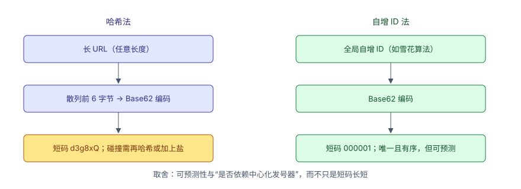
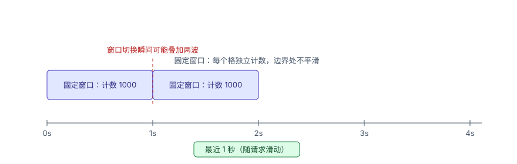

系统设计中的数据结构
系统设计面试很少问“用什么数据结构”，而是问“为什么是这个”。把需求拆成一组读写操作，再对照各结构在这些操作上的代价，选择就变得可解释。
先问“为什么选这个”
先拆需求：一个系统需求往往可以写成一组操作，比如“写入一个键值对”“按时间取最近 N 条”“统计区间内有多少次调用”。把这些操作列出来，再逐条问：读多还是写多？是点查还是范围查？是否需要有序？ 选择就从“凭印象”变成“有依据”。
还要分清两个层次：数据结构（数组、哈希、堆、跳表……）解决的是单机内的组织方式；而系统组件（缓存、分片、副本、消息队列）解决的是跨机器、容量与一致性问题。面试里常见的问题是“为什么用 A 不用 B”，其实是问你对两者代价的理解。
本章的四个案例都是这个套路的练习：短网址考察唯一 ID 的生成，排行榜考察有序 + Top-K，限流器考察时间窗口，Feed 流考察推还是拉。
短网址：哈希 vs 自增
短网址把长 URL 映射成短字符串，访问时重定向回去。核心是：怎么生成这个短码，并保证不重复。有两条路：

先把“整数 → 短码”这一步写对（下面是最小实现，完整代码与测试在仓库）：
ALPHABET = "0123456789abcdefghijklmnopqrstuvwxyzABCDEFGHIJKLMNOPQRSTUVWXYZ"
def base62_encode(num):
if num == 0:
return ALPHABET[0]
out = []
while num > 0:
num, rem = divmod(num, 62)
out.append(ALPHABET[rem])
return "".join(reversed(out))
def base62_decode(code):
num = 0
for ch in code:
num = num * 62 + ALPHABET.index(ch)
return num正反变换互为逆运算，这是短网址能工作的前提。至于“取散列前几字节”的做法：它会碰撞（不同 URL 得到相同短码），所以要么冲突时换盐重算，要么预生成短码池。自增 ID 不会碰撞，但它可被遍历推算出其他链接，敏感场景可用随机预生成。
排行榜与 Top-K
排行榜的需求可以拆成两种：实时更新分数 + 查询任意名次，或只要前 K 名。两者选的结构不同。
- 需要完整排名：用有序结构。Redis 的 ZSet 底层是跳表（第 22 章），插入/更新 O(log n)，按分数范围取一段也很快。这正是“跳表换范围查询友好”的工程印证。
- 只要 Top-K：用一个大小为 k 的最小堆（第 11 章）扫一遍即可，O(n log k) 时间、O(k) 空间，比全排序 O(n log n) 更省。
import heapq
def top_k(scores, k):
"""scores: {用户: 分数}；返回按分数降序的前 k 个。"""
if k <= 0:
return []
heap = [] # 最小堆，堆顶是当前第 k 名
for user, score in scores.items():
if len(heap) < k:
heapq.heappush(heap, (score, user))
elif score > heap[0][0]:
heapq.heapreplace(heap, (score, user))
return sorted(heap, key=lambda item: -item[0])为什么用最小堆而不是最大堆？因为我们关心的是“当前第 k 名是多少”，当堆满 k 个之后，只需和新元素比一下堆顶就能决定要不要替换。堆只保证父子序、不等于整体有序，所以最后要再排一次序得到展示顺序。
对于“小时榜/日榜”，可以把大时间窗拆成小窗，每个小窗单独算，再合并——这是把数据量降到可处理规模的通用技巧。
限流器
限流器保护后端不被流量打垮。不同算法的差别，直接对应到“用什么结构记录请求”。

滑动窗口可以用双端队列实现：队列里存每个请求的时间戳，新请求到来时先把过期的从队首弹出。
from collections import deque
class SlidingWindowLimiter:
def __init__(self, limit, window):
self.limit = limit
self.window = window
self.times = deque() # 只存时间戳
def allow(self, now):
while self.times and self.times[0] <= now - self.window:
self.times.popleft() # 弹出窗口外的旧请求
if len(self.times) >= self.limit:
return False
self.times.append(now)
return True为什么用 deque 而不是 list？因为要从队首频繁删除：deque.popleft() 是 O(1)，而 list.pop(0) 是 O(n)。每个请求最多入队、出队各一次，所以单次操作摊还为 O(1)——注意这里又是摊还，而不是每次都是严格 O(1)。
| 算法 | 核心数据结构 | 允许突发？ |
|---|---|---|
| 固定窗口 | 一个计数器 | 是，但窗口切换时有毛刺 |
| 滑动窗口 | 双端队列（存时间戳） | 较平滑 |
| 令牌桶 | 上次补充时间 + 当前令牌数 | 是，突发受桶容量限制 |
| 漏桶 | 队列 + 定时器 | 否，强制恒定速率 |
看滑动窗口逐步放行/拒绝
限制为“任意 1 秒内最多 4 个请求”。请求时间依次为 0, 200, 400, 600, 800, 1000, 1200, 1400（单位：毫秒，整数避免浮点误差）。拖动滑块逐个处理。
Feed 流：推与拉
关注的人发了内容，你如何看到？有两种基本模式，它们的代价恰好相反：
- 推模式（写扩散）：发布时把内容写入每个粉丝的收件箱（如每人的有序时间线）。读时只需拉自己的收件箱，读得快；但写时很重——一个千万粉丝的大 V 发一条就要写千万次。
- 拉模式（读扩散）：发布只写一份，用户读时去合并自己关注的人的列表。写轻；但读时要合并很多源，尤其是关注很多人时。
真实系统常用混合模式：普通用户走推模式（粉丝少，写扩散代价可控），大 V 走拉模式（避免一次写千万次）。判断依据是粉丝数分布——这正是第 7 章讲过的“平均情况与极端情况不一样”。
时间线本身通常用有序结构（如按时间排好的列表/有序集合），取出时按时间倒序截断，类似于排行榜的区间查询。
不要简单背“推好还是拉好”。正确的是：先说清读多写多、粉丝分布如何，再说选哪种，并说清混合方案的切分依据。
未读计数与在线状态
即时通讯里有两个小而典型的数据结构问题。
未读计数：每个会话记录一个未读数，新消息到达时加一，用户打开会话时清零。这是一个计数器——单个数字就是最好的结构，不需要列表。真正的难点在一致性（多设备、消息可能乱序到达），那是系统工程问题，而不是数据结构问题。
在线状态：要快速回答“用户 X 是否在线”，并为每个在线用户维护心跳过期。两种思路：
- 位图（bitmap）：给每个用户一个 bit，在线置 1。用户 ID 密集且数量可控时，位图内存占用小、查询 O(1)。缺点是需要知道总用户数、且 ID 稀疏时浪费空间。
- 哈希表 + 过期时间：存在线用户及其最后心跳时间，定期清理。适合大规模、稀疏 ID，但需要处理过期与并发。
可以看到：同样是“在线吗”，ID 是稠密还是稀疏被拿来作为选择位图与否的依据——这也是工程选型的通用思路。
速查与边界
把本章的例子归成一张“需求 → 结构”的对照表：
| 需求 | 首选结构 | 理由 |
|---|---|---|
| 长 URL ↔ 短码双向映射 | 哈希表 / 数据库索引 | 按唯一键点查，O(1) 平均 |
| 完整排行榜 | 跳表 / 有序集合 | 有序 + 区间查询 |
| 只要 Top-K | 大小为 k 的最小堆 | O(n log k)，比全排更省 |
| 最近一段时间内计数 | 双端队列 / 计数器 | 需要按时间过期 |
| 允许突发的限流 | 令牌桶（时间+计数） | 桶容量控制突发上限 |
| 在线状态 | 位图（稠密 ID）/ 哈希表 | 看 ID 是否稠密 |
两个容易踩的边界：其一，基62短码与“自增 ID”都只是手段，真正的取舍是可预测性与是否依赖中心化发号器；其二，限流滑动窗口的 O(1) 是摊还，不是每次都严格 O(1)。
别把“系统组件”和“数据结构”混为一谈：选对结构只是第一步，缓存、分片、副本、一致性那些问题在单机结构之外。本章只讲了“单机内怎么组织数据”这一层。
带走三个判断准则
- 先把需求写成一串读写操作，再对照结构的代价；先问“读多写多、点查还是范围查”。
- 只要 Top-K 就用大小为 k 的堆，不要为了前几名而全量排序。
- 限流与 Feed 没有万能的单一方案；按流量特点（突发性、粉丝分布）选，并说清取舍。
继续学习与校验资料
- Redis Sorted Sets — 跳表实现的有序集合
- Token bucket、Leaky bucket — 两种限流模型
- 第 22 章：跳表与 B+ 树；第 11 章：堆与优先队列
- 运行参考：
examples/system_design.py；测试：tests/test_system_design.py